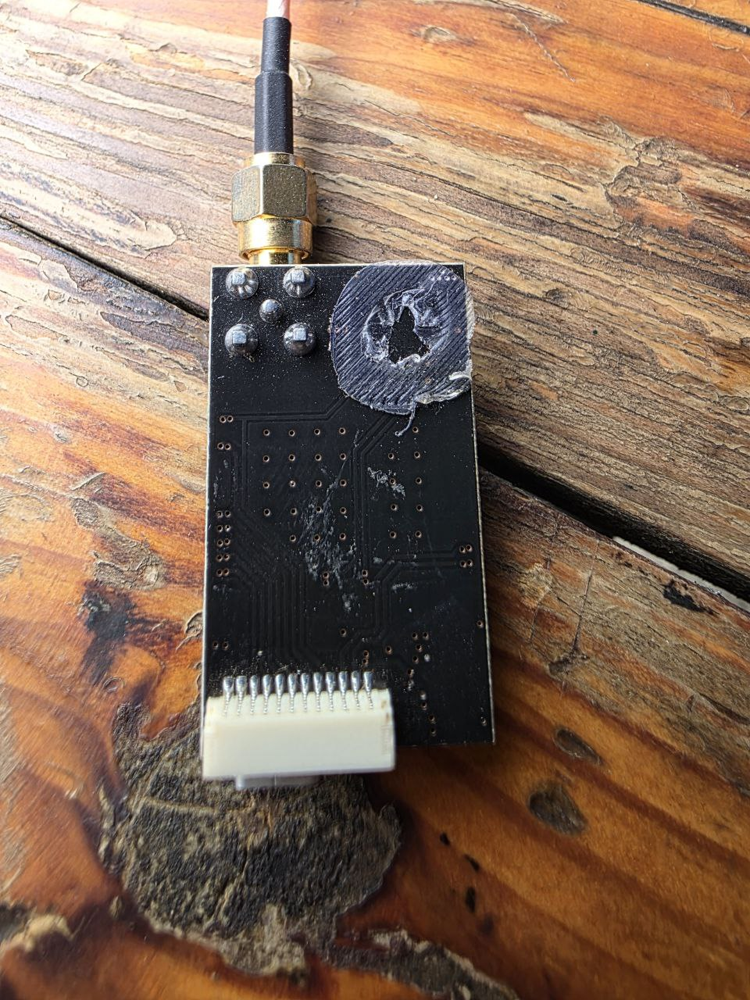
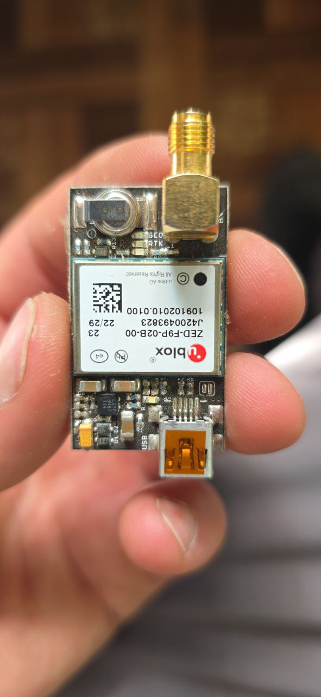

Скачай
оффлайн-версию
работает без интернета.
Главная страница
4х лапая на минике 5
6400гр на 1 мотор при газе в 70 в около 10кг должен брать спокойно
divНеподдерживаемое вложение 20424 (голосовое или gif)div
divНеподдерживаемое вложение 20510 (голосовое или gif)div
divНеподдерживаемое вложение 21207 (голосовое или gif)div
divНеподдерживаемое вложение 22125 (голосовое или gif)div
divНеподдерживаемое вложение 24651 (голосовое или gif)div
httpsgnss.storezed-f9p-gnss-modules99-235-elt0087.html61-gnss_module-l1_l2_zed_f9p
SbrBs
STALLION-VTOL-FILES-x5eqtg
video IMG 9578
video video 40502-07-2025 17-04-14
А рама какая
Бабу-Ягу в дом не пускать
Безымянный 1751408256
Безымянный 1751437762
Безымянный 1751464877
Безымянный 1751644962
Безымянный 1753720249
В теории это выглядит так
Вечер добрый кто знает маркировку данных моторов
Вопрос. Я тут где-то писал уже...никак не подружу ни с одним FC данное чудо....
Всем доброго не подскажет кто как запилить Мозаику эту в качестве ГПС к полетнику вроде и так и сяк напрямую с ПК дружит работает через FC не Коннект. Интересует интерфейс и протокол какой. В сети мало инфы. Благодарю
Всем добрый день
Всем привет
Думаю собрать очень жирный FPV (или очень маленькую бабку-ежку) и наткнулся на эти моторы. Кто то с подобными сталкивался и не мурзилки ли они дают в описании
есть интересны вариант недовоблы
К вопросу о трекерах
Какой
Какой может быть ликбез всё по сути одно и тоже. На вампирах и ягах стоят в основном литиевые 6s10p либо липошки 7s1p на 85000 или 75000мА. То что фото в скотчепереупаковал крайняя была поврежденаудалил.
Нет у кого STL на такие сбросы
Ну вот присутствующему здесь нашему коллеге вчера прислали такое видео.
Пока так еще усилить раму и управу ставить...
Попался вот такой хохлопидорский гпс модуль распиновку нарисовать не могу (12 пинов)
Приветствую Обмен матрас30т. Установлен усилок 2.4. Было осуществлено 2 полета. С ним отдаю 6 АКБ.
Сибирь 1
Так для информации модуль сбросов с вампиров.
Только так не делай. Забыл про диэлектро втулки. А там рама- единицы Ом
У вас завалялись трофеи Бабы-яги
Что-то не ищутся платки с вашей обвязкой. Только похожие. Питание можно найти подключив по миниюсб(вроде он) к компу.
Список сформирован из темы
Тяжёлые(агро) дроны
Источник темы
ТЭЧ БпЛА | FPV
Попался вот такой хохлопидорский гпс модуль распиновку нарисовать не могу (12 пинов)
Из темы
Тяжёлые(агро) дроны
Из источника
ТЭЧ БпЛА | FPV

Попался вот такой хохлопидорский гпс модуль, распиновку нарисовать не могу (12 пинов) Ранее попадались (2×4 пин) выходы подписанные были либо накопать в алике можно.

Веб-страница создана автоматически на основе
поста
пользователя
Roma